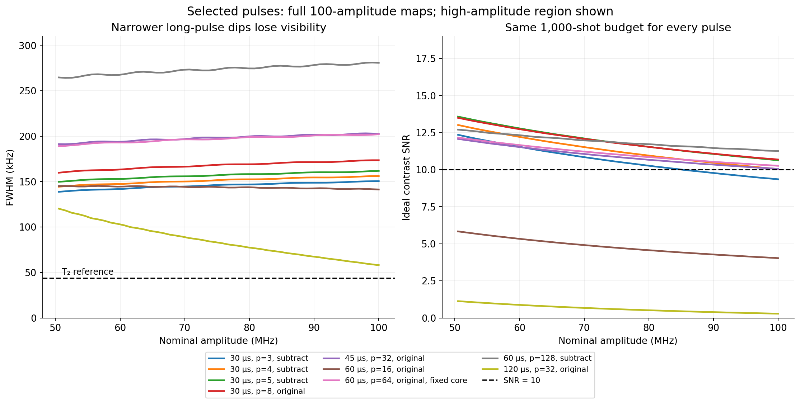
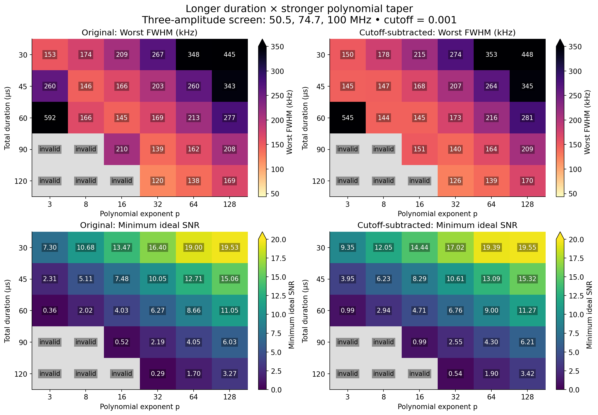
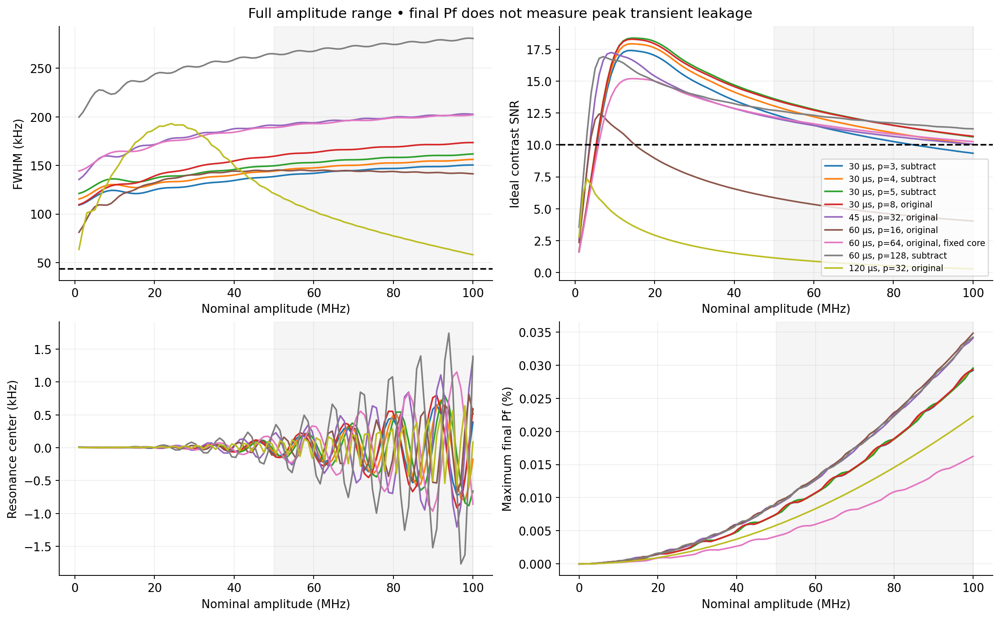
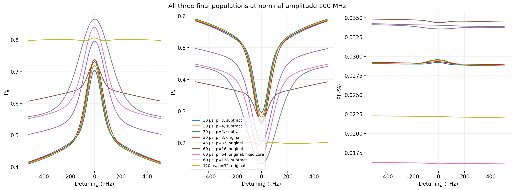
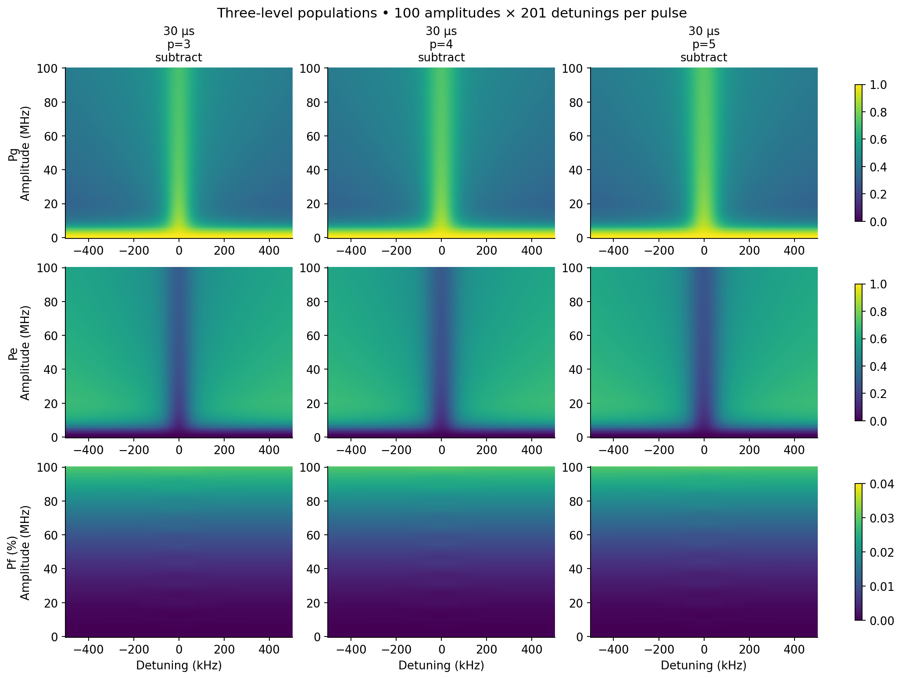
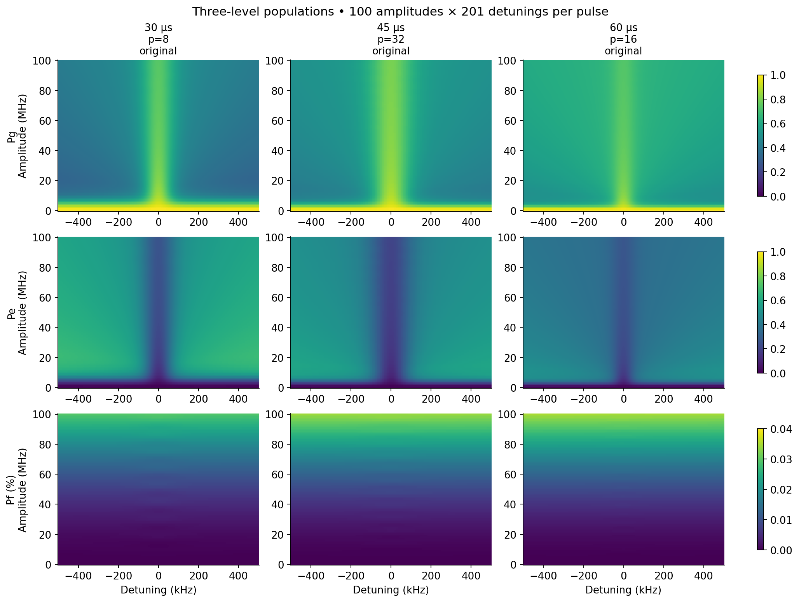
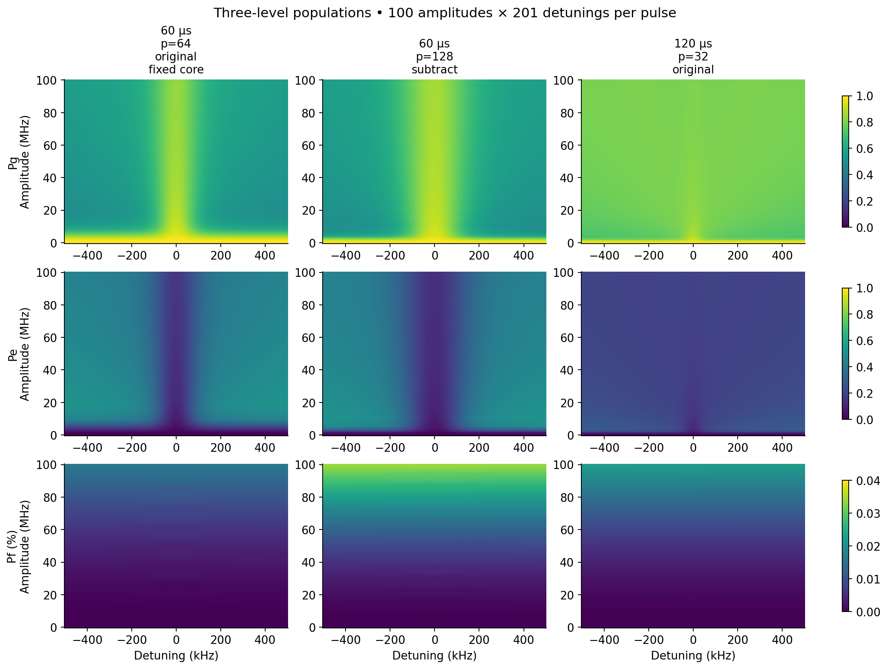

The tested family still misses the joint target. At fixed T₂ = 7.31 µs the coherence reference is 43.54 kHz. Across 83 duration/power/shape settings screened at three high amplitudes, 0 sampled points meet both FWHM ≤ 50 kHz and ideal SNR ≥ 10. Longer duration can narrow a visible dip, but the signal falls; increasing the polynomial exponent restores visibility while broadening the dip again.
The lowest worst-case width among the screened cases with minimum SNR ≥ 10 is 156.22 kHz, for 30 µs, p=4, subtract. This is a finite search, not a proof that every possible pulse fails. The full grids below check 9 selected cases with 100 amplitudes from 0 to 100 MHz. High-amplitude statistics use all 50 points from 50.505 to 100 MHz.
At 100 MHz specifically, the 120 µs, power-32 original pulse reaches 58.05 kHz, but its ideal SNR is only 0.29 and its population contrast is 0.72 percentage points. It is much closer to the linewidth reference, with too little signal at this shot budget.
This study varies polynomial windows, with and without subtracting the endpoint value. The previous C2 endpoint-subtraction construction is a different family and was not varied here; this is not a ranking of every earlier pulse design.
Each column reports a conservative worst case across the high-amplitude range; the extrema need not occur at the same amplitude. Contrast is a population difference; SNR is that difference divided by its ideal shot noise.
| Pulse | Worst FWHM (kHz) | Width / T₂ reference | Minimum SNR | Minimum Pe contrast | Max |center| (kHz) |
|---|---|---|---|---|---|
| 30 µs, p=3, subtract | 150.46 | 3.46× | 9.35 | 0.281 | 0.72 |
| 30 µs, p=4, subtract | 156.22 | 3.59× | 10.04 | 0.300 | 0.80 |
| 30 µs, p=5, subtract | 161.85 | 3.72× | 10.64 | 0.315 | 0.88 |
| 30 µs, p=8, original | 173.53 | 3.99× | 10.68 | 0.316 | 0.91 |
| 45 µs, p=32, original | 203.12 | 4.66× | 10.05 | 0.289 | 1.36 |
| 60 µs, p=16, original | 145.28 | 3.34× | 4.03 | 0.119 | 0.81 |
| 60 µs, p=64, original, fixed core | 202.07 | 4.64× | 10.26 | 0.283 | 1.15 |
| 60 µs, p=128, subtract | 281.06 | 6.45× | 11.27 | 0.303 | 1.77 |
| 120 µs, p=32, original | 120.25 | 2.76× | 0.29 | 0.007 | 0.64 |

The pulse is I(t) = A s(t) g(t) [1 − (2t/L)²]p on |t| < L/2. For the original family, g = [1 + (t/σ)²]−1/2. For cutoff subtraction, g = (f − c)/(1 − c). Both have g(0) = 1 before the 16 ns sine echo inversion. The full product derivative supplies DRAG Q.
The window alone has temporal half-height width
W = L √(1 − 2−1/p) ≈ L √(ln 2 / p).
This is the width of the polynomial window, not the Lorentzian core or an exact
spectral-width formula. For large p, doubling L and quadrupling p nearly preserves
the taper around the center. It adds little useful tail duration while moving
readout farther from the center. At fixed L, raising p suppresses more of the
slow Lorentzian wings. The simulation includes relaxation and dephasing throughout;
the loss of visibility cannot be described by a single exp(−L/T₂) factor.
Thus endpoint smoothness and amplitude robustness do not by themselves produce the narrowest line. The additional width is protocol- and drive-dependent; 1/(πT₂) is the weak-drive Lorentzian reference, not a universal lower bound on a finite pulse's interference dip.
Literature context: truncating Lorentzian tails creates amplitude-dependent broadening in coherent excitation spectroscopy (Mihov and Vitanov). That result motivates smooth tails, but it does not establish the linewidth or visibility of this three-level dissipative echo sequence.
Durations: 30, 45, 60, 90, 120 µs. Powers: 3, 8, 16, 32, 64, 128. These heatmaps use only 50.505, 74.747 and 100 MHz. Gray means at least one trace failed the central-dip quality criteria. Values above the color scale are printed explicitly.

After the broad screen, 11 extra settings resolve intermediate powers and 35–40 µs durations near the most promising short-pulse region. These rows also use three screening amplitudes.
| Pulse | Worst FWHM (kHz) | Minimum SNR |
|---|---|---|
| 30 µs, p=4, subtract | 156.22 | 10.04 |
| 30 µs, p=5, subtract | 161.85 | 10.64 |
| 30 µs, p=6, subtract | 167.33 | 11.16 |
| 30 µs, p=7, original | 168.46 | 10.18 |
| 35 µs, p=6, subtract | 155.37 | 8.84 |
| 35 µs, p=8, subtract | 164.19 | 9.68 |
| 35 µs, p=12, subtract | 180.69 | 10.97 |
| 40 µs, p=8, subtract | 154.03 | 7.78 |
| 40 µs, p=12, subtract | 167.23 | 9.00 |
| 40 µs, p=16, subtract | 180.31 | 9.95 |
| 45 µs, p=24, subtract | 188.48 | 9.63 |
At fixed c = 0.001, σ scales with duration: 15 ns at 30 µs, 30 ns at 60 µs, and 60 ns at 120 µs. We also keep σ = 15.000008 ns while increasing L, using c = [1 + (L/(2σ))²]−1/2. This extends the tails without widening the core. These controls use the original envelope and the same three screening amplitudes; selected controls also have a full grid.
| L (µs) | p | Worst FWHM (kHz) | Minimum SNR |
|---|---|---|---|
| 60 | 3 | 587.64 | 1.51 |
| 60 | 8 | 167.69 | 3.90 |
| 60 | 16 | 144.74 | 5.86 |
| 60 | 32 | 164.16 | 8.01 |
| 60 | 64 | 202.07 | 10.26 |
| 60 | 128 | 262.13 | 12.48 |
| 120 | 3 | 246.16 | 0.62 |
| 120 | 8 | 567.16 | 0.84 |
| 120 | 16 | 545.57 | 1.14 |
| 120 | 32 | 192.41 | 2.43 |
| 120 | 64 | 143.18 | 3.82 |
| 120 | 128 | 162.02 | 5.30 |





β = −0.5; 16 ns sine echo transition for every pulse; α = −216 MHz; T₁ = 51.24 µs; T₂ = 7.31 µs; Tφ = 7.871480508563624 µs. Three-level RWA Lindblad simulation with adjacent-level relaxation and number dephasing; no extra phenomenological Stark correction. Q = −β I′/(2π|α|), with time in µs and α in MHz. No area or signed-envelope peak renormalization.
Detuning spans ±0.5 MHz with 201 points. FWHM uses nearest half-depth crossings above the central Pe minimum, relative to a linear background fitted at |detuning| ≥ 0.4 MHz. This is a fixed finite-window definition, not a Lorentzian fit. The SNR budget is 500 shots at the fitted center and 250 at each ±0.45 MHz shoulder. It assumes perfect binary Pe readout and omits technical noise and center-search cost. A longer pulse also costs more time per shot, which this equal-shot comparison does not reward or penalize. Final Pf is not peak transient leakage.
Original 30 µs powers 3, 8 and 16 reproduce the prior populations within 10⁻¹⁰. Envelope positivity, symmetry and analytic derivatives were checked across the screen. All output populations are finite, within [0,1], and sum to one within 10⁻¹⁰. For 9 selected cases at the three screen amplitudes, halving the time step from 0.5 to 0.25 ns changes populations by at most 4.84e-05 and widths by 22.35 Hz. Refining the detuning grid from 5 to 2.5 kHz changes widths by at most 123.52 Hz.
43 focused model/window/metric tests passed. Full-suite collection is blocked by the environment's missing Torch package. Repository-wide Ruff reports 692 existing findings; the two new scripts pass scoped Ruff. All results here are simulations.
Parameters and numerical provenance · Source hashes · Screen summaries · Full-grid summaries · Full metrics CSV · Numerical convergence · Comparison PDF · Screen PDF
Reproduce: .venv/bin/python scripts/scan_duration_polynomial.py --stage screen,
then --stage full --cases L30_p3_subtracted_cutoff L30_p4_subtracted_cutoff L30_p5_subtracted_cutoff L30_p8_raw_cutoff L45_p32_raw_cutoff L60_p16_raw_cutoff L60_p64_raw_core L60_p128_subtracted_cutoff L120_p32_raw_cutoff,
then --stage refine --cases L120_p32_raw_cutoff L30_p3_subtracted_cutoff L30_p4_subtracted_cutoff L30_p5_subtracted_cutoff L30_p8_raw_cutoff L45_p32_raw_cutoff L60_p128_subtracted_cutoff L60_p16_raw_cutoff L60_p64_raw_core,
and .venv/bin/python scripts/plot_duration_polynomial.py.